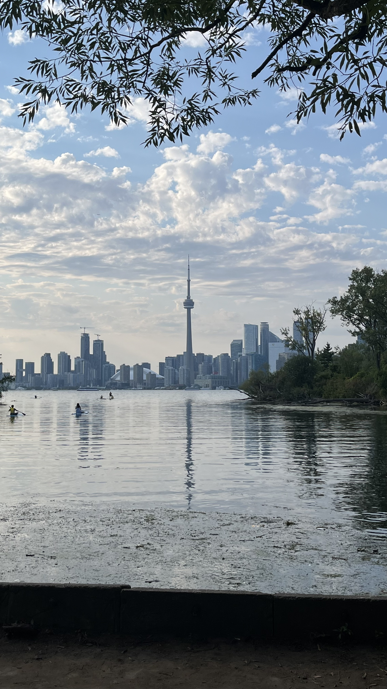
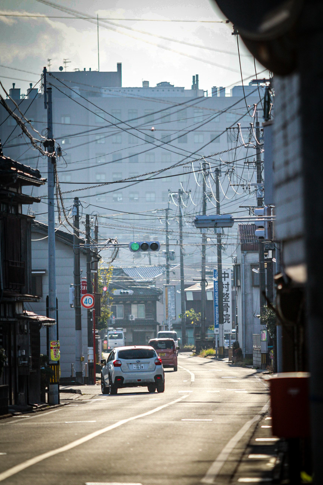

나의 여행 앨범
사진과 영상 기록들
🎵 여행 음악
여행할 때 마음가짐
브라우저가 오디오 재생을 지원하지 않습니다.
📷 여행 사진

캐나다 토론토
토론토 아일랜드, UOT, Queen's st
2025년 8월
일본 아이치
지브리 파크, 나고야, 시라카와 고
2024년 1월

일본 돗토리
돗토리 사구, 요나고, 아오야마 고쇼전
2023년 10월
🎬 여행 브이로그
브라우저가 동영상 재생을 지원하지 않습니다.
📍나이아가라 폭포
브라우저가 동영상 재생을 지원하지 않습니다.
📍아이치 지브리 파크
브라우저가 동영상 재생을 지원하지 않습니다.
📍돗토리 사구